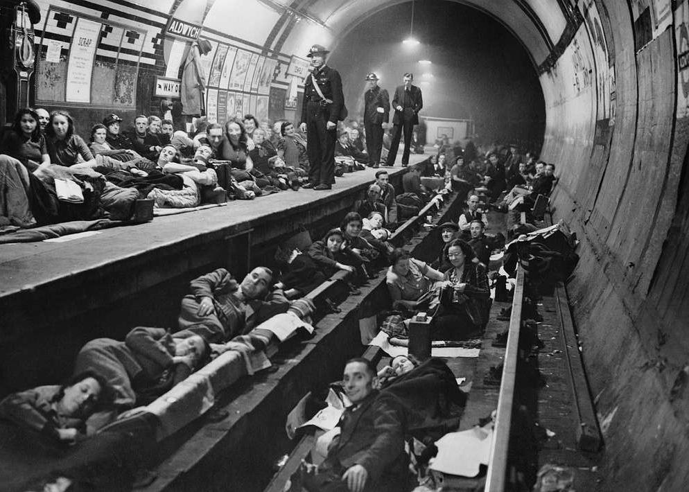
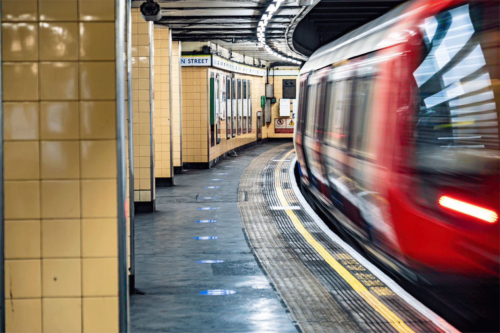
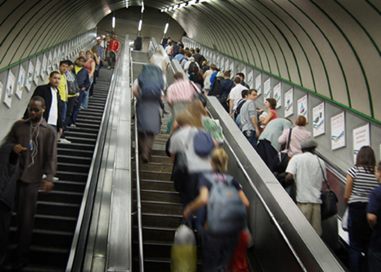

The Underground in Numbers
| Opening Date | January 10, 1863 |
| Length of all the Lines | 250 Miles |
| Passengers per year | 1.35 Billion |
| Number of Elevators | 202 |
| Number of Escalators | 451 |
| Annual Miles Travelled | 51.95 Million Miles |
| Average Train Speed | 20.5 Miles per Hour |
| Longest Direct Route | The Central Line: Epping to East Ruislip (34.11 miles) |
| Highest Station Above Sea Level | Amersham: 482 Feet |
| Busiest Station | Waterloo: 100.3 Million Passengers per Year |
| Station with the Most Platforms | Baker Street: 10 |
| Station with the Most Escalators | Waterloo: 23 |
| Station with the Longest Escalator | Angel: 197 Feet |
| Station with the Shortest Escalator | Stratford: 13 Feet |



Fun Facts
- The nickname “The Tube” comes from the early days of the Central Line. The fare to ride was originally tuppence (two pennies) so Londoners refered to the line as the “Twopenny Tube” and the Tube part of the nickname stuck.
- The Central lines’ tunnels follow the old medieval street plan of London, hence why it curves back and forth a lot more than some of the more modern lines.
- Less than 10% of Underground Stations are south of the River Thames. This reflects a broader cultural, socioeconomic, and racial divide in the city.
- The escalators of the Underground travel the equivalent of the circumference of the world twice every week.
- Aldgate station was built over a plague pit with over 1,000 bodies.
- Part of the Piccadilly Line closed down during WWII to safeguard artifacts from the British Museum.
- Despite its famous name, only about 45% of the London Underground I actually underground.
- Some say that 20 minutes on the Northern Line exposes you to the equivalent amount of smog as one cigarette.
- It took over 28 months for TfL to audition and test new voices for the Underground’s announcement system.
- Today, there are roughly 49 abandoned stations, sometimes referred to as ghost stations.